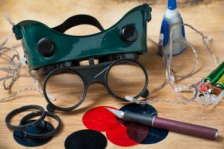
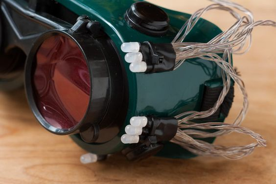
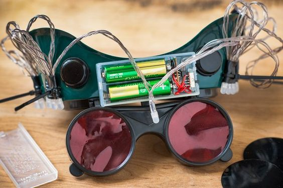
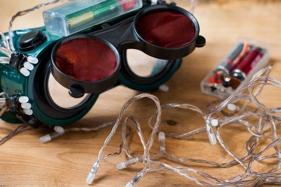

Remove the lenses and trace their shape onto sheets of Congo blue and primary red theatrical gels.
Ensure that you have two pieces for each color and cut all four pieces out using the X-Acto knife.

Glue the blue gels first and then the red ones, by touching the outer rim of the gels all the way around with super glue.
Make sure that you put one of each color gel on each lens of the glasses so you end up with each eye filtering red and blue light.
Gently lay the lenses inside the glasses one at a time and wait for them to dry.

Glue the eight high-intensity infrared LEDs, four on each side, to the outside of the goggles
and on the outer edge of the lenses so they are to the left of the left lens and to the right of the right lens.
The LEDs create the illumination needed to filter the light through the colored gels. Secure the wires of the lights to the outer edge of the
goggles using electrical tape.

Wire the lights to the 3-volt, button-cell battery and glue the battery to the side of the goggles.
Ensure there is a battery on each side of the goggles so each set of lights has a battery.
Leave the plus wire short so it does not touch or tape it down so it isn't able to make contact.
You may also want to wire a switch from the wire to the battery so the goggles can be turned on and off.
However, you can simply tape the wire to the battery when in use.

Take your goggles outside to test them. If the image is weak or not well-illuminated, you may need to add more LEDs or another layer of gels.